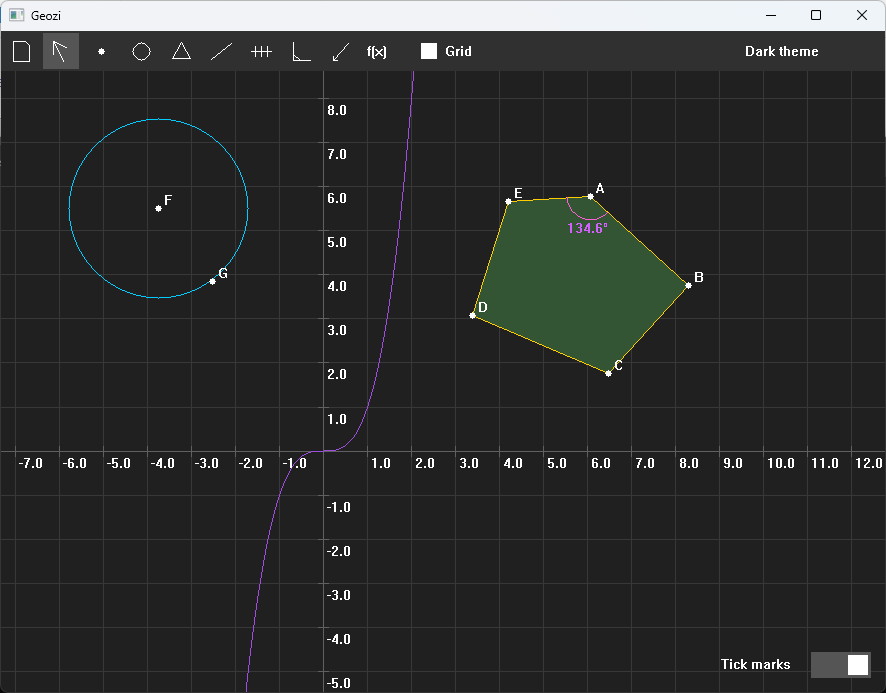
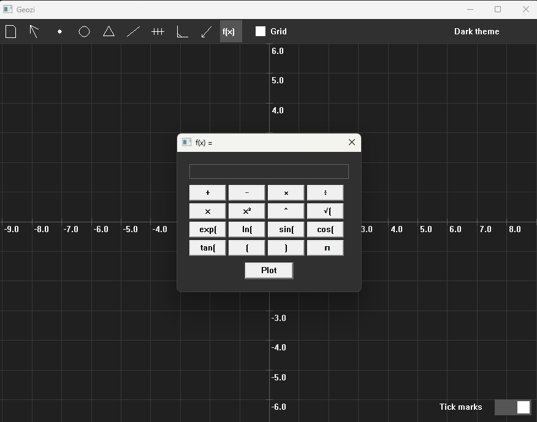

The main window.
Features
- Points, lines, segments, circles and polygons
- Parallel and perpendicular lines
- Function plotting
- Angles, distances and polygon areas
- Move points, undo actions
- Save and load constructions as .gsp files
- Adaptive grid, zoom, and customizable themes

Plotting a function next to a construction.
Technical details
Geozi is written in Rust and talks to Windows directly through the Win32 API. It does not use a GUI framework or any external crate: the window, the input handling and the drawing (into a pixel buffer) are all done by hand.
- Platform: Windows
- Dependencies: none
- File format: .gsp
The source is split into a few modules:
app, control, dialog,
geometry, render, storage,
theme, ui and win32.
Building
git clone https://github.com/danterry898/geozi cd geozi cargo build --release